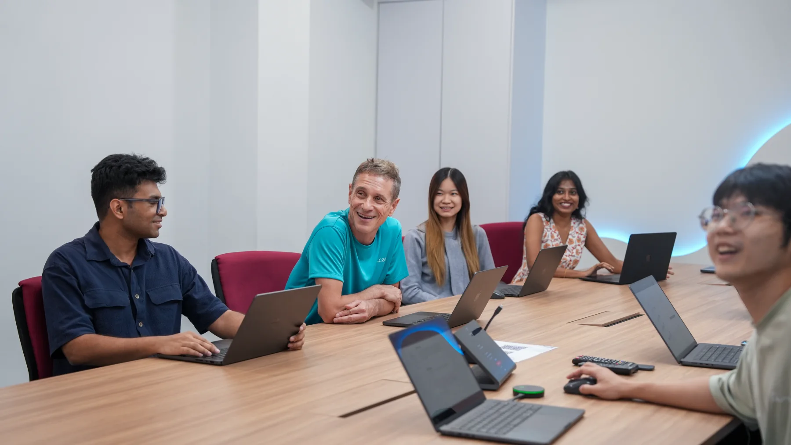
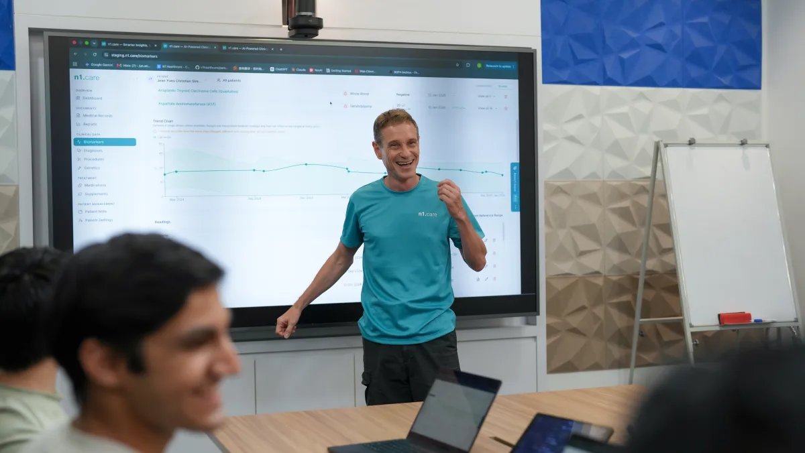
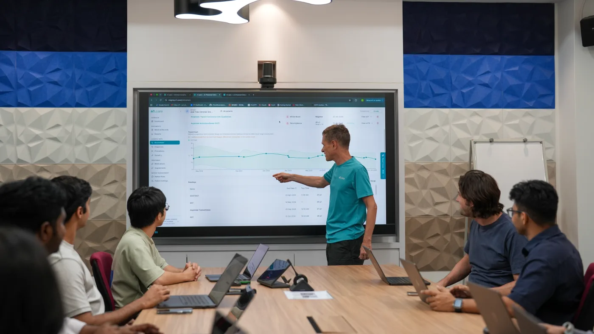
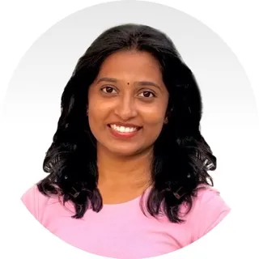
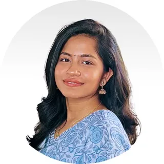
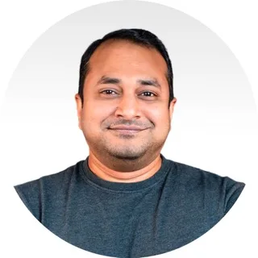
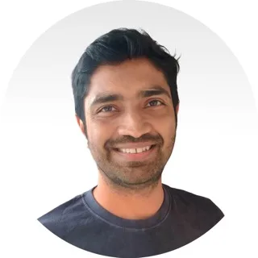
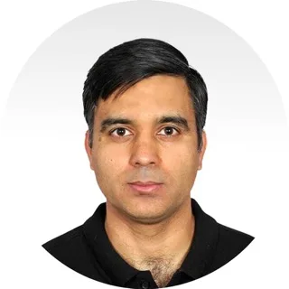
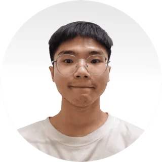
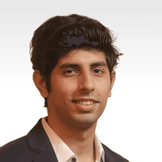

Bring the record together
n1 reads many files and builds one health timeline. The source files stay close at hand.

Every finding links to its source. Every report can be reviewed and edited. The clinician makes the final call.

After 25 years at Deriv, Jean‑Yves chose a new problem. A patient’s story is often split across hundreds of pages and many systems. The facts exist. The clear picture does not.
n1 started with a simple belief: AI can do the slow work of joining that story, as long as people can check its work. n1 links each finding to its source. Every report stays open to review.
The goal is not to put AI in charge. It is to help doctors prepare with better context, help patients understand what changed, and make their time together more useful.
“Health care has no shortage of data. The challenge is making sense of it.”Jean‑Yves Sireau · Founder & CEO

n1 reads many files and builds one health timeline. The source files stay close at hand.
Trends, gaps, and key events are easier to check before and during a visit.
The doctor checks, edits, and approves the report. n1 does not make the clinical call.
Our health, research, product, and software teams work side by side. We check the details together because each detail can matter to a patient.












See how n1 turns scattered files into a report that a clinician can check and a patient can understand.
Open a sample report